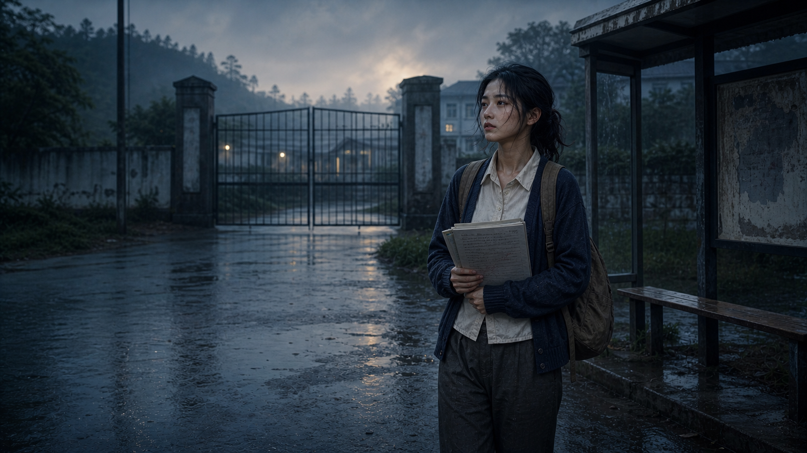
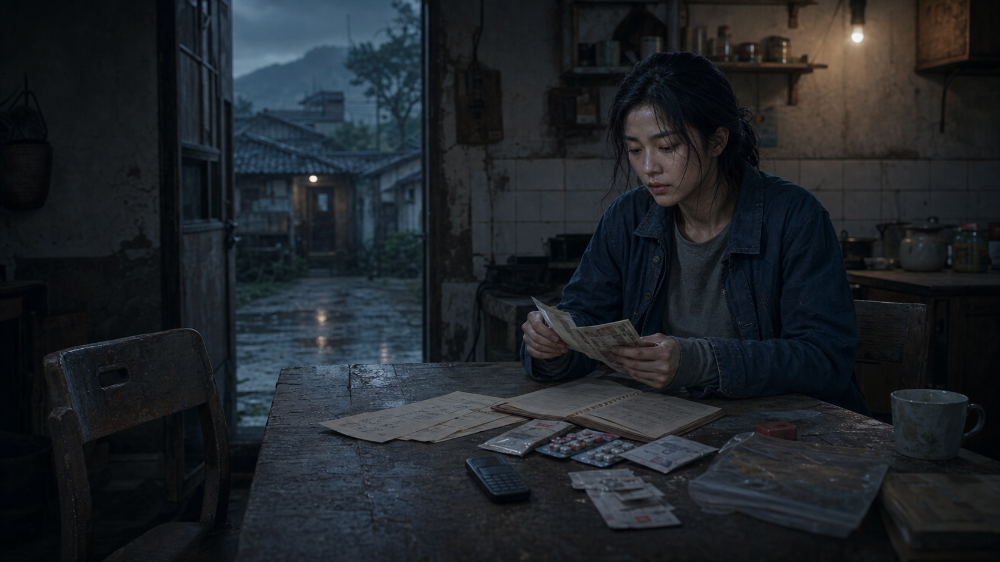
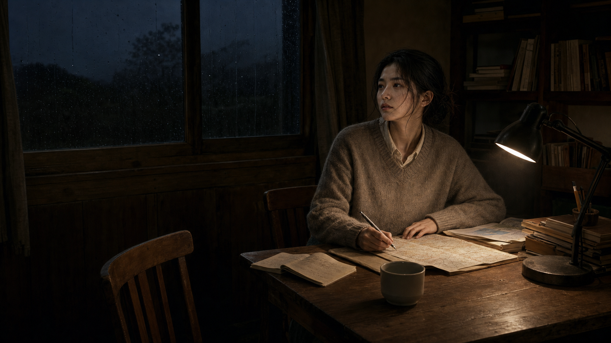

这个项目的核心不是让玩家站在上帝视角做“最优选择”，而是把低资源成长中的不可见限制做成系统：出生点决定初始地图，支持网络改变可承受风险，机会窗口只在某些时刻短暂出现。
页面结构采用横屏电影档案：玩家点击地图节点进入事件，悬停选项预览风险，确认后读取“当时的犹豫”和真实存档。视觉上用村落、学校、门、窗和档案室构成路线隐喻。


我把“人生经历”从线性叙事改造成可操作原型：事件不是抒情段落，而是节点；情绪不是旁白，而是玩家做选择前必须读取的限制条件。
项目包含完整前端、交互状态、节点内容、视频播放、风险提示、角色生成与原始档案结算。适合展示我在游戏化叙事、交互产品、AIGC 视觉资产和前端原型上的综合能力。
进入项目
这个项目可以被当成一个完整的互动内容产品看：从概念、叙事结构、视觉资产、网页交互到线上部署，均围绕“人生选择如何被系统条件塑形”这个主题服务。
| 模块 | 作品中体现的能力 | 面试官可查看的证据 |
|---|---|---|
| 游戏机制 | 把抽象经历拆成节点、变量、风险预览和结算反馈 | 地图节点、选项悬停、风险提示、原始存档 |
| 叙事设计 | 用第二人称体验感替代自传式说明，保持克制与可读性 | 节点文案、内心片段、档案口吻 |
| AIGC 视觉 | 统一生成村落、学校、窗口、档案等电影感场景 | 7 张核心场景图与 16 段视频片段 |
| 前端原型 | 静态站点完成状态切换、视频叠加、响应式提示与交互反馈 | 可直接在 GitHub Pages 打开试玩 |